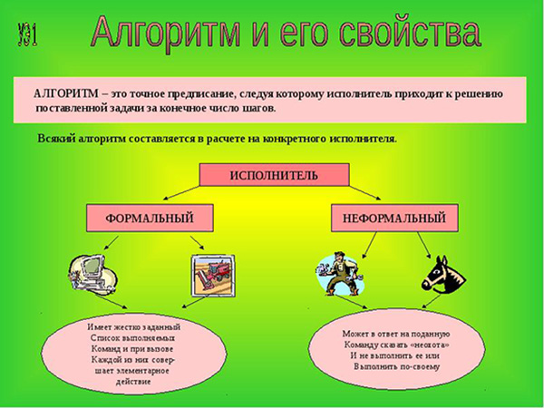

Зачем нужны алгоритмы

Многих пугает слово алгоритм, кажется, что это что-то сложное, но на деле это просто законченный набор инструкций. Получается, что вы используете алгоритмы и в обычной жизни, например, когда готовите по рецепту, или добираетесь по навигатору из точки А в точку Б, или решаете квадратное уравнение.
Когда разработчики говорят об алгоритмах, они имеют в виду не все алгоритмы, а только популярные решения стандартных задач. Многие алгоритмы были придуманы ещё до компьютеров: например, алгоритм поразрядной сортировки был запатентован в девятнадцатом веке в США для обработки данных, полученных после переписи населения.
Для решения одной и той же задачи могут подходить разные алгоритмы. Представьте, у вас есть список, в котором нужно найти элемент. Предположим, что это список товаров в интернет-магазине и пользователь вводит в фильтр название товара, которое начинается с буквы «Е». Как это сделать?
Если список отсортирован по алфавиту, вам подходит двоичный поиск — вы смотрите в середину списка, находите там товар, название которого начинается, например, на «К». Список отсортирован, поэтому вы точно знаете, что нужный вам товар находится в левой от вас части списка, потому что «Е» в алфавите стоит раньше, чем «К». Теперь вы берёте левую часть списка и повторяете ту же процедуру с ней.
Если список не отсортирован, лучше подойдет прямой перебор — вы по порядку идёте от начала списка до его конца и пытаетесь найти тот элемент, который вас интересует. В худшем случае вам придется посмотреть все элементы, но зато вы будете заранее знать время, которое потратите на поиск нужного элемента.
Выбирать алгоритм нужно под задачу. Поймите, с какими данными вы работаете, и отталкивайтесь от этого.
Комментарии